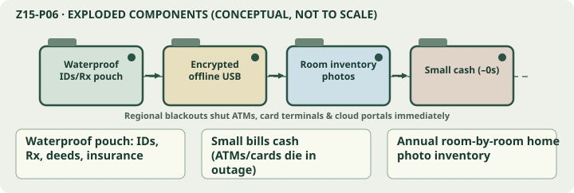

Z15-P06 · Disaster scenarios · New manuscript
Safeguard vital documents, insurance records, and small cash reserves
Ensure households can prove identity, obtain prescriptions, buy fuel/food when card networks fail, and file recovery claims rapidly.
When it applies · Pre-disaster household continuity planning and post-disaster recovery.
Equipment · Waterproof/fire-resistant grab-and-go pouch, encrypted offline USB/drive backup, home-inventory photos, and small-denomination cash.

Actions
- Store physical copies (plus encrypted offline digital copies) of critical records inside a sealed waterproof grab-and-go pouch: photo IDs, birth/marriage certificates, medical, prescription, and immunization lists, insurance policies, property deeds/leases, bank/utility account numbers, and pet vaccination records.[D16, D17]
- Keep a modest reserve of small-denomination cash ($1s, $5s, $10s, $20s) stored securely at home—regional blackouts shut down ATMs, bank branches, and retail credit-card terminals immediately, and stores often cannot make change for large bills.[D16, D11]
- Walk through every room and garage annually taking clear smartphone photos/videos of furnishings, tools, and serial numbers backed up offline so post-storm or post-flood insurance claims rest on solid documentation.[D16]
Failure recognition · Evacuating a wildfire or flood with zero paper IDs, zero prescription list, and $0 cash while regional card networks and cloud portals stay offline for four days.[D16, D11]
Verify · Confirm waterproof document pouch staged with go-bag, encrypted offline backup updated annually, home photos stored, and small cash secured.[D16]
Stop or change course · Never leave unencrypted sensitive identity files exposed in shared public spaces or hand personal banking info to unverified post-disaster solicitors.[D16]
Evidence and editorial notes
- D11 · FEMA / Ready.gov · Power Outages (current web edition)
- Section: Preparing for a power outage; during an outage · Conditions: Household grid outage; services and backup duration vary
Support: Prepare for interruptions to communications, commerce, transport, water and powered medical support.
Limitations: Half-tank and cash targets are household planning choices, not predictions of backup limitations. · Conflicting evidence: See A02 claim audit for boundaries.
Editorial note: Drives cascading infrastructure failure and 30-day resilience cards. · Specialist reviewer: Critical infrastructure and emergency management
Primary source · checked 2026-11-24 - D16 · FEMA / Ready.gov · Financial Preparedness and Vital Records (current web edition)
- Section: Vital Documents, Cash Reserves, Insurance, and Post-Disaster Recovery · Conditions: 30-day resilience planning and post-disaster household recovery
Support: Keep waterproof physical and encrypted offline digital copies of IDs, medical lists, prescriptions, insurance policies, deeds, and emergency contacts alongside small-denomination cash so household transactions and assistance claims survive bank/internet outages.
Limitations: Online-only cloud portals are inaccessible during power and telecom outages. · Conflicting evidence: None; critical pillar of prolonged 30-day household resilience.
Editorial note: Grounds documentation, cash liquidity, and recovery staging cards. · Specialist reviewer: Emergency management and household continuity
Primary source · checked 2026-11-24 - D17 · FEMA / Ready.gov · Prepare Your Pets for Disasters (current web edition)
- Section: Pet, Service-Animal, and Vulnerable-Member Accountability · Conditions: Households with pets, service animals, children, older adults, or access/functional needs
Support: Include leashes, carriers, vaccination records, pet food/water, and pet-friendly shelter lists in household evacuation plans—never leave pets chained or trapped behind; coordinate explicit buddy assignments for children, older adults, and mobility/power-dependent household members.
Limitations: General public Red Cross shelters always admit service animals under ADA rules, whereas companion pets often require separate co-located or pet-friendly shelters. · Conflicting evidence: None; complements T10 disability planning.
Editorial note: Ensures complete household and vulnerable-group accountability in Z15. · Specialist reviewer: Accessible emergency management and animal welfare
Primary source · checked 2026-11-24
Source lineage · FEMA Ready.gov Financial Preparedness; new manuscript · Classification · New manuscript.